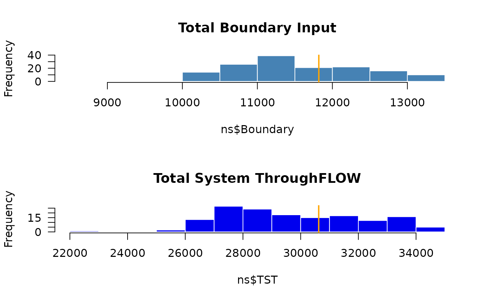
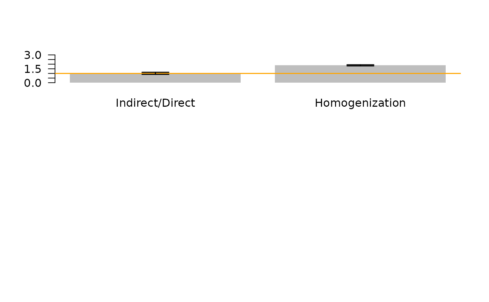
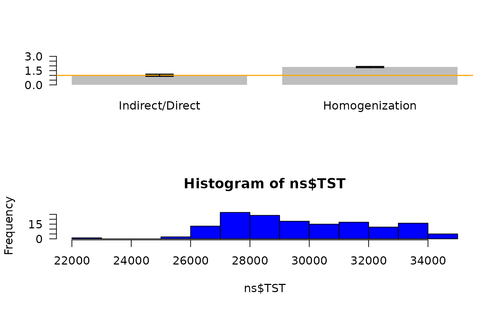

Connects enaR to limSolve to apply Linear Inverse Modelling to conduct an uncertainty analysis for Ecological Network Analysis. Users supply an initial ecosystem model (in the enaR format) and uncertainty informaiton (several ways of specifying), and the function returns a list (length = "iter") of balanced plausible instantiations of the model. This has been used to determine the 95 and to determine the statistical significance of selected comaprisons (Hines et al. 2015, 2016).
Usage
enaUncertainty(
x = "network object",
type = "percent",
iter = 10000,
p.err = NA,
F.sym = NA,
z.sym = NA,
y.sym = NA,
e.sym = NA,
r.sym = NA,
F.bot = NA,
z.bot = NA,
y.bot = NA,
e.bot = NA,
r.bot = NA,
F.top = NA,
z.top = NA,
y.top = NA,
e.top = NA,
r.top = NA
)Arguments
- x
a network object. This includes all weighted flows into and out of each node.
- type
is a paramter to switch the kind of uncertainty analysis to complete: "percent", "sym", "asym". The "percent" options explores the parameter space for all parameters by a fixed percentage. The "sym" options let the user specify an amount to explore around each flow estimate (internal flows (F) and boundary flows (inputs, exports, respirations). This option assuems that the possible deviation is symmetric around the original values. The "asym" lets the user specify upper and lower limits for each flow value.
- iter
is the number of plausible models to sample (number of iterations of the sampling algorithm). The default is 10000, which is often a sufficient sample size for Monte Carlo sampling.
- p.err
If the user selects the "percent" type, they must also specify the percent change with this parameter.
- F.sym
If the user selects the "sym" type, then this parameter specifies the 1/2 the symmetric parameter range for each internal flow. This should be specified as a data frame in a sparse matrix format with columns identifying the starting node, the target node, and the change value (in same units as flows).
- z.sym
If the user selects the "sym" type, then this parameter specifies the 1/2 the symmetric parameter range for each input flow. This is specified as a data frame in a sparse matrix format with columns identifying the node number and the change value (in same units as flows).
- y.sym
If the user selects the "sym" type, then this parameter specifies the 1/2 the symmetric parameter range for each output flows. This is specified as a data frame in a sparse matrix format with columns identifying the node number and the change value (in same units as flows).
- e.sym
If the user selects the "sym" type, then this parameter specifies the 1/2 the symmetric parameter range for each export flows. This is specified as a data frame in a sparse matrix format with columns identifying the node number and the change value (in same units as flows).
- r.sym
If the user selects the "sym" type, then this parameter specifies the 1/2 the symmetric parameter range for each respiration flows. This is specified as a data frame in a sparse matrix format with columns identifying the node number and the change value (in same units as flows).
- F.bot
If the user selects the "asym" type, then this data.frame specifies the minimum possible value for each internal flows. This should be specified as a data frame in a sparse matrix format with columns identifying the starting node, the target node, and the change value (in same units as flows).
- z.bot
If the user selects the "asym" type, then this data.frame specifies the minimum value for each non-zero model input. This is specified as a data frame in a sparse matrix format with columns identifying the node number and minimum value (in same units as flows).
- y.bot
If the user selects the "asym" type, then this data.frame specifies the minimum value for each non-zero model output. This is specified as a data frame in a sparse matrix format with columns identifying the node number and minimum value (in same units as flows).
- e.bot
If the user selects the "asym" type, then this data.frame specifies the minimum value for each non-zero model export. This is specified as a data frame in a sparse matrix format with columns identifying the node number and minimum value (in same units as flows).
- r.bot
If the user selects the "asym" type, then this data.frame specifies the minimum value for each non-zero model respiration. This is specified as a data frame in a sparse matrix format with columns identifying the node number and minimum value (in same units as flows).
- F.top
If the user selects the "asym" type, then this data.frame specifies the maximum possible value for each internal flows. This should be specified as a data frame in a sparse matrix format with columns identifying the starting node, the target node, and the change value (in same units as flows).
- z.top
If the user selects the "asym" type, then this data.frame specifies the maximum value for each non-zero model input. This is specified as a data frame in a sparse matrix format with columns identifying the node number and maximum value (in same units as flows).
- y.top
If the user selects the "asym" type, then this data.frame specifies the maximum value for each non-zero model output. This is specified as a data frame in a sparse matrix format with columns identifying the node number and maximum value (in same units as flows).
- e.top
If the user selects the "asym" type, then this data.frame specifies the maximum value for each non-zero model export. This is specified as a data frame in a sparse matrix format with columns identifying the node number and maximum value (in same units as flows).
- r.top
If the user selects the "asym" type, then this data.frame specifies the maximum value for each non-zero model respiration. This is specified as a data frame in a sparse matrix format with columns identifying the node number and maximum value (in same units as flows).
Value
- plausible.models
A length=iter list of the plausible models in the network data object format spcified for enaR
References
Hines, D.E., J.A. Lisa, B. Song, C.R. Tobias, S.R. Borrett. 2015. Estimating the impacts of sea level rise on the coupling of estuarine nitrogen cycling processes through comparative network analysis. Marine Ecology Progress Series 524: 137-154.
Hines, D.E, Singh, P., Borrett, S.R. 2016. Evaluating control of nutrient flow in an estuarine nitrogen cycle through comparative network analysis. Ecological Engineering 89:70-79. doi:10.1016/j.ecoleng.2016.01.009
Examples
rm(list = ls())
library(enaR)
# === INPUT ===
# load model for analysis
data(troModels)
m <- troModels[[6]] # cone sping model (Kay et al. 1989; from Tilly)
# Set Uncertainty Analysis parameters
no.samples = 150 # the number of plausible models to return (number of samples);
# 10,000 would be better.
f.error = 25 # flow parameters percent error to investigate
# === ACTION ===
# peform uncertainty analysis
m.uncertainty.list <- enaUncertainty(m, # original model
type = "percent", # type of uncertainty to use
p.err = f.error, # define percent error
iter = no.samples ) # specify the number of samples
#> Warning: No equalities - setting type = 2
# apply selected ENA
ns <- lapply(m.uncertainty.list, get.ns) # get ENA whole network statstics (metrics, indicators)
ns <- as.data.frame(do.call(rbind, ns))
ns.original <- as.data.frame(get.ns(m))
# === OUTPUT ===
# lets see how the uncertainty in model flows changed the model inputs and total system throughflow.
opar <- par(las = 1, mfcol = c(2,1))
hist(ns$Boundary, col = "steelblue", border = "white", main = "Total Boundary Input")
abline(v = ns.original$Boundary, col = "orange", lwd = 2)
hist(ns$TST, col = "blue2", border = "white", main = "Total System ThroughFLOW")
abline(v = ns.original$TST, col = "orange", lwd = 2)

rm(opar)
# Lets use the 95% CI to make statisitcal inferences about the
# hypothesized "dominance of indirect effects" (Higashi and Patten
# 1991, Salas and Borrett 2010, Borrett et al. 2016), and "network
# homogenization" (Fath and Patten 1999, Borrett and Salas 2010,
# Borrett et al. 2016)
# find 95% confidence intervals
id.95ci <- quantile(ns$ID.F, probs = c(0.025, 0.975))
hmg.95ci <- quantile(ns$HMG.O, probs = c(0.025, 0.975))
# barplot of the calculated values for the original model
opar <- par(las = 1)
bp <- barplot(c(ns.original$ID.F, ns.original$HMG.O),
ylim = c(0,3),
col = "grey",
border = NA,
names.arg = c("Indirect/Direct", "Homogenization"))
abline(h = 1, col = "orange", lwd = 1.5) # threshold value
# add 95CI error bars from Uncertainty Analysis
arrows(bp, c(id.95ci[1], hmg.95ci[1]),
bp, c(id.95ci[2], hmg.95ci[2]),
code = 3, lwd = 1.5, angle = 90, length = 0.2, col = "black")
# === OUTPUT ===
# lets see how the uncertainty in model flows changed the model inputs and total system throughflow.
opar <- par(las = 1, mfcol = c(2,1))

hist(ns$Boundary, col = "steelblue", border = "white", main = "Total Boundary Input")
abline(v = ns.original$Boundary, col = "orange", lwd = 2)
hist(ns$TST, col = "blue2", border = "white", main = "Total System ThroughFLOW")
abline(v = ns.original$TST, col = "orange", lwd = 2)
rm(opar)
# Lets use the 95% CI to make statisitcal inferences about the
# hypothesized "dominance of indirect effects" (Higashi and Patten
# 1991, Salas and Borrett 2010, Borrett et al. 2016), and "network
# homogenization" (Fath and Patten 1999, Borrett and Salas 2010,
# Borrett et al. 2016)
# find 95% confidence intervals
id.95ci <- quantile(ns$ID.F, probs = c(0.025, 0.975))
hmg.95ci <- quantile(ns$HMG.O, probs = c(0.025, 0.975))
opar <- par(las = 1)
bp <- barplot(c(ns.original$ID.F, ns.original$HMG.O),
ylim = c(0,3),
col = "grey",
border = NA,
names.arg = c("Indirect/Direct", "Homogenization"))
abline(h = 1, col = "orange", lwd = 1.5) # threshold value
# add 95CI error bars from Uncertainty Analysis
arrows(bp, c(id.95ci[1], hmg.95ci[1]),
bp, c(id.95ci[2], hmg.95ci[2]),
code = 3, lwd = 1.5, angle = 90, length = 0.2, col = "black")
# The results show that the orignial value of the Indirect-to-Direct
# flows ratio is larger than one, indicating the "dominance of
# indirect effects"; however, the 95% confidence interval for this
# indicator with a 25% uniform uncertainty spans the threshold value
# of 1 (ranging from 0.9 to 1.16). Thus, we are not confident that
# this parameter exceeds the interpretation threshold given this
# level of uncertainty. In contast, the network homogenizaiton
# pameter exceeds the interpretation threshold of 1.0, and the 95% CI
# for our level of uncertainty suggests that we are confident that
# this interpretation is correct.
hist(ns$TST, col = "blue")
